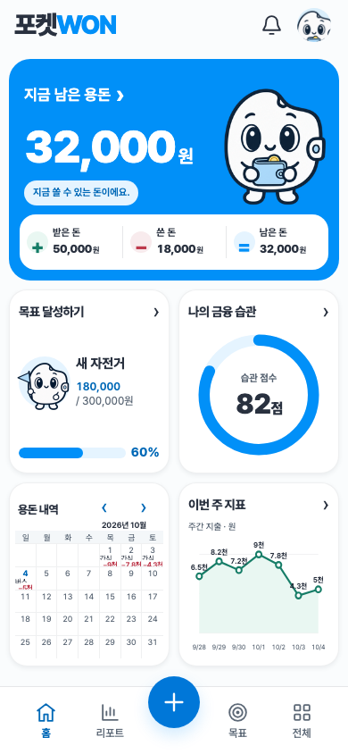
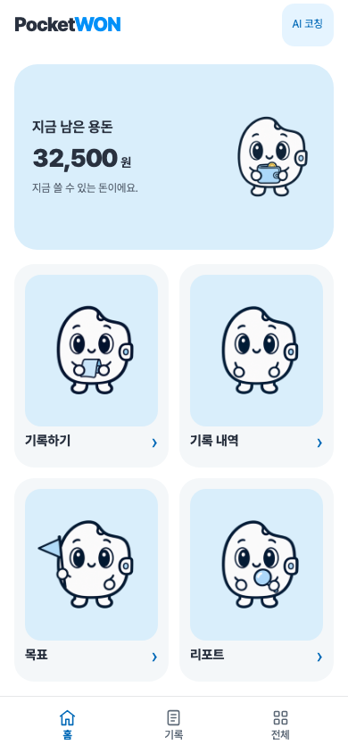
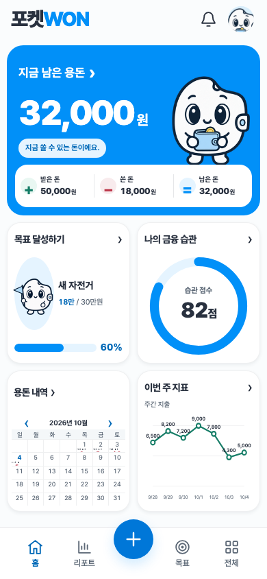
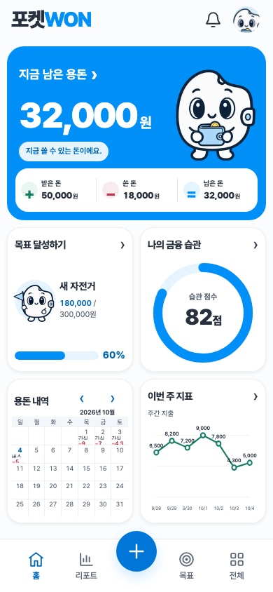
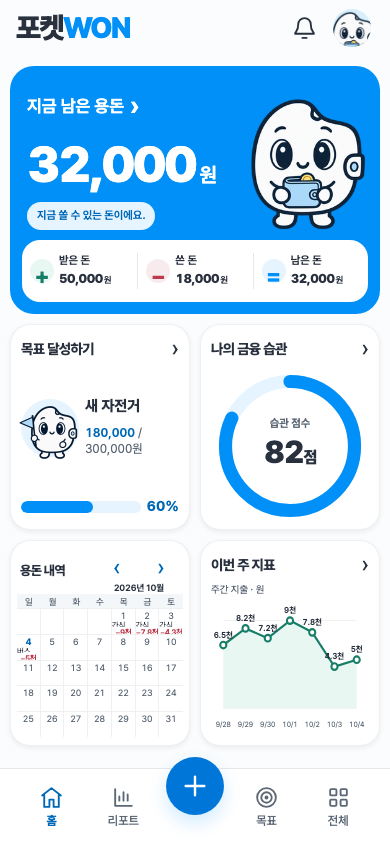

포켓WON · 레퍼런스 기반 대시보드
기존 캐릭터·스프라이트·팔레트·기능을 유지하고, 홈의 프레임과 정보 구조를 재구성했습니다. 레퍼런스는 앱 내부만 표시합니다. 구현 캡처의 숫자는 격리된 검증용 거래이며 실제 앱의 저장 데이터 연결을 검증합니다.
실제 앱 열기 · 구현 보고서 · 최종 화면 검증 · 자산·미러 검증
목표 이미지 — 앱 내부네 카드 동일 높이는 확정된 구현 기준에 맞춰 조정했습니다.
실제 앱 — 최종 렌더
390 × 844 · Chromium · 검증용 데이터
시각 보정 과정
변경 전
Pass 1 · 전체 배분
Pass 2 · 컴포넌트
Pass 3 · 미세 정렬
Pass 4 · 작은 화면
검증
| 영역 | 결과 |
|---|
| 기존 브라우저 회귀 | 9 suite · 544 checks PASS |
| 금융 계약 | 29 groups PASS |
| 캐릭터·시트·테마·글꼴 | 보호 파일37개 byte 동일 |
| 모바일 구조 | 모든 요청 폭×높이 조합 · Chromium/WebKit |
| 로컬 미러·과거 자료 | 74 files 일치 · 1,168 files 보존 |
짧은 화면·200% 글자 확대는 세로 재배치하며, 물리 기기 검증과 공개 배포는 수행하지 않았습니다.